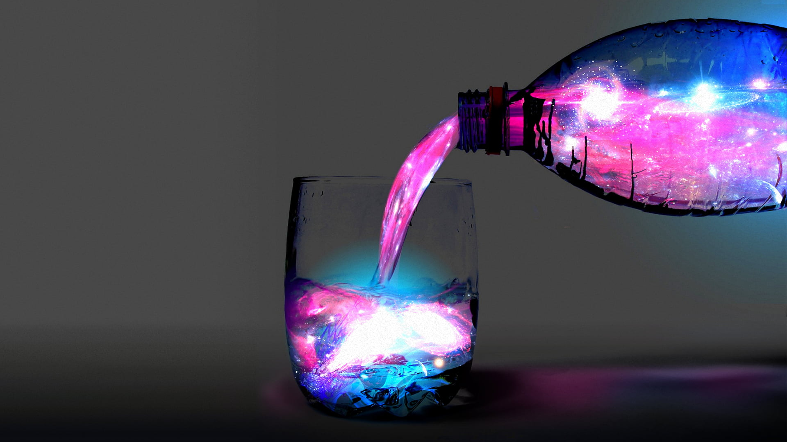

Models You Can Use

Adani Ports Price Prediction
Explore a powerful ML model to predict Adani Ports' stock trends using historical data.
Try the Model

Water Jug Problem Solver
Experiment with an interactive tool for solving water jug problems using BFS.
Try the Model
Minimax Algorithm Tic-Tac-Toe
Play an interactive game of Tic-Tac-Toe against an AI built using the Minimax algorithm.
Try the Model8-Puzzle Solver
Solve the 8-puzzle problem or get AI assistance for solving it.
Try the Model